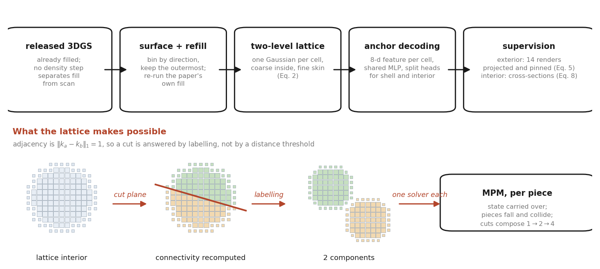

Lattice Interiors for 3D Gaussian Splatting
Interior texture that a simulator can cut, count, collide, and query
Overview
An object reconstructed by 3D Gaussian Splatting is a shell. FruitNinja fills the interior with free-floating opaque Gaussians and supervises them with a diffusion prior on a few cross-sectional planes. The rendered result is convincing and the representation is inert: an unordered point cloud, which a system that cuts the object cannot ask anything of.
We keep the supervision and change the representation to a two-level voxel lattice — one Gaussian per occupied cell, coarse inside and refined at the skin, attributes decoded from a shared MLP. Adjacency is then free, and adjacency is what a cut needs.

Cutting is an event with an answer measured
A plane arrives while the simulation runs. Two neighbouring cells stay connected iff they fall on
the same side of it — one O(1) test per cell. Connected-component labelling then reports
how many pieces exist: exactly, with no threshold to choose. One MPM solver is built per piece with
state carried over.


The appearance is tied to a render resolution measured
Every primitive in the released models stores scale = −16, so exp(−16) =
1.1×10⁻⁷: they are points, and what gives them a footprint is the rasteriser's screen-space
low-pass — a fixed number of pixels, not a fixed size in the world. At 512 that footprint happens to
match the primitive spacing. Above it, the spacing grows with the frame and the footprint does not.

| Object | Method | 512 | 1024 | 2048 | 4096 |
|---|---|---|---|---|---|
| Orange | FruitNinja | 1.23% | 5.19% | 29.58% | — |
| Ours | 0.34% | 0.95% | 1.40% | — | |
| Watermelon | FruitNinja | 0.08% | 0.14% | 1.65% | 28.95% |
| Ours | 0.01% | 0.03% | 0.02% | 0.02% |
Fraction of a transverse section's own area that renders as background. How far a released model survives depends on how densely it was filled — the orange fails at 2048, the watermelon, filled about twice as densely for its size, at 4096.
Material, decomposed without being told measured
A fruit is not one material, and a filled point cloud carries a colour per primitive and no statement about what any of them is. On the lattice, the level says shell from interior and the decoded appearance says what kind of interior. Clustering those, with classes merged when their appearance centroids agree so K is not chosen by hand, separates an orange into peel, flesh, a transition and pith — nothing is told that an orange has a pith.

| Probe on the frozen 8-d appearance feature | MAE ↓ | R² ↑ | 4-class accuracy ↑ | |
|---|---|---|---|---|
| Linear | 0.2235 | 0.234 | 37.0% | |
| 2-layer | 0.1359 | 0.695 | 62.9% | |
| 3-layer | 0.0767 | 0.851 | 79.2% | |
| Control — shuffled target | 0.2839 | −0.007 | 14.4% |
So the appearance latent already carries the material distinction, and not linearly. The relative field it predicts is dimensionless in [0,1]; the absolute scale comes from an order-of-magnitude range keyed by category, because appearance cannot supply a modulus and pretending otherwise would be false precision. Fed to MPM per particle, a drop that compresses a uniform object by 4.2% compresses the lattice-derived one by 0.1%.
Interior fidelity measured


| Object | Method | FID h ↓ | KID h ↓ | FID v ↓ | KID v ↓ | Cos ↑ |
|---|---|---|---|---|---|---|
| Orange | FruitNinja | 95.5±2.0 | 145.9±3.0 | 234.2±22.6 | 316.4±42.5 | 0.966 |
| Ours | 141.0±7.0 | 221.9±15.0 | 192.4±18.0 | 238.3±27.8 | 0.978 | |
| Watermelon | FruitNinja | 180.5±2.7 | 218.5±12.7 | 244.6±14.9 | 291.1±31.8 | 0.944 |
| Ours | 275.4±5.8 | 378.1±12.2 | 235.1±5.0 | 304.6±14.0 | 0.955 |
Mean ± standard deviation over five independent draws of the cut planes. KID ×10⁻³.
We do not win on interior fidelity, and the error bars are what make that statement possible to make: redrawing the cut planes moves FID by ±2 to ±23, so a single draw cannot separate these models at all. The released models are ahead on transverse sections; we are ahead on the orange's longitudinal sections and on cross-view consistency; the watermelon's longitudinal sections are a tie.
Where the gap is, and where it is not
| Transverse section | L* | a* | b* | saturation | |
|---|---|---|---|---|---|
| Orange | Photographs | 79.0 | 13.4 | 63.4 | 0.750 |
| FruitNinja | 76.0 | 23.4 | 65.9 | 0.828 | |
| Ours | 77.4 | 12.1 | 63.0 | 0.751 | |
| Watermelon | Photographs | 64.3 | 41.7 | 37.0 | 0.611 |
| FruitNinja | 58.5 | 51.2 | 51.3 | 0.800 | |
| Ours | 59.6 | 40.7 | 37.0 | 0.633 |
It is not colour. Ours matches the photographs almost exactly while the released models run red and oversaturated — nearly twice the photographs' redness on the orange. It is not detail quantity either: in every spatial-frequency band measured we carry more energy than the photographs and more than the released model, twice the photographs' at the finest scale. What is different is what the detail is. On the orange our edge density is 0.100 against the photographs' 0.066 — that surplus is grain, the residual of a per-pixel loss against a photograph of a different specimen whose fibres can never be brought into register with ours. On the watermelon the supervised planes carry 0.181 against their targets' 0.129, while held-out cuts carry 0.073 against the photographs' 0.141: the structure is on the planes the model was trained on and thin between them.
Cost measured
| Object | Method | Primitives | Parameters | On disk |
|---|---|---|---|---|
| Orange | FruitNinja | 3,928,330 | 55.0M | 267 MB |
| Ours | 898,563 | 7.2M | 61 MB | |
| Watermelon | FruitNinja | 7,959,789 | 111.4M | 541 MB |
| Ours | 806,506 | 6.5M | 132 MB |
A free primitive stores 14 floats. A lattice cell stores an 8-dimensional feature with position implicit in the grid index, plus one shared 35k-parameter decoder.
Arbitrary topology measured
The published dataset — watermelon, apple, orange, red velvet cake, loaf bread, pomegranate — is entirely genus zero and every released model is star-shaped about its centroid. We train a doughnut.

The reference-free metrics do not see this failure at all: CLIP scores 28.6 and 28.1 for the two runs, and cross-view consistency prefers the broken one, 0.892 against 0.861, because a surface of revolution is more self-similar across views than crumb is.
What did not work reported
The published method regenerates each cross-sectional reference from the model's own render every iteration, so both families of planes descend from one 3-D state. The diagnosis is right — the two families do contradict each other, measurably — but every way we implemented it cost more than it returned.
| Orange, held-out cuts | FID h ↓ | FID v ↓ | |
|---|---|---|---|
| No consistency mechanism | 118.9 | 210.5 | |
| SDS regeneration (the published loop) | 171.6 | 229.8 | |
| Geometric reconciliation along plane intersections | 129.1 | 207.4 | |
| … started late and held, so corrections compound | 129.7 | 224.2 |
The last row is the informative one. Holding the reconciled targets instead of re-deriving them drove the measured disagreement between the two families down by an order of magnitude, from 0.16–0.23 to 0.02–0.04 — so the mechanism does what it claims. The sections did not improve. The families were genuinely in conflict and resolving that conflict is not what the fidelity gap was made of.
Also measured and not adopted: predicting material as an auxiliary task alongside appearance (mixed — transverse 118.9→136.8, longitudinal 210.5→193.1, and the head fits worse jointly than it does afterwards on the frozen feature, 0.204 against 0.077); drawing the transverse camera's roll at random each iteration; raising the band-statistics weight 3.3×, which moved the surplus high-frequency energy by 12% and cost 33 FID. A resolution scan was attempted and is not reported: the shell extraction that seeded it left the fill unable to reach the centre, so those runs measure an extraction parameter rather than resolution.